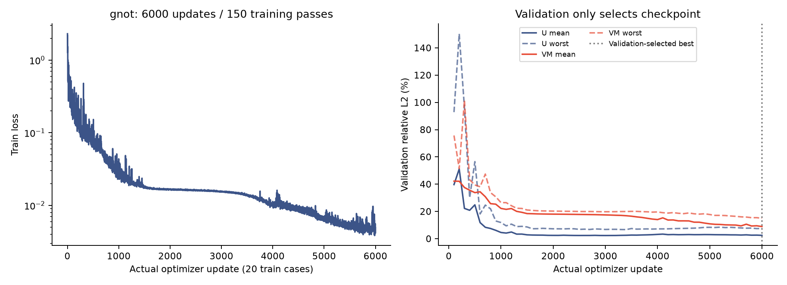
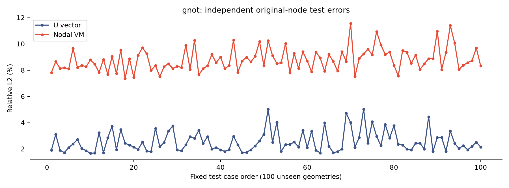
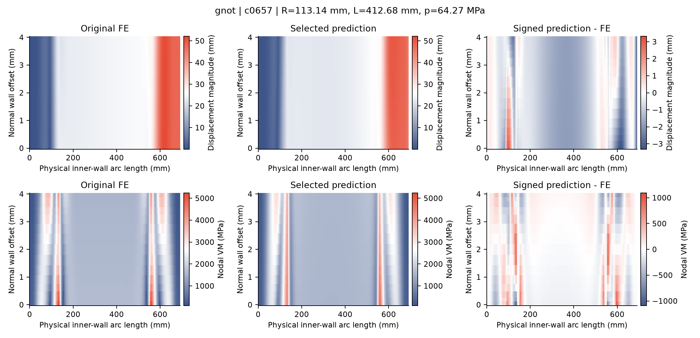
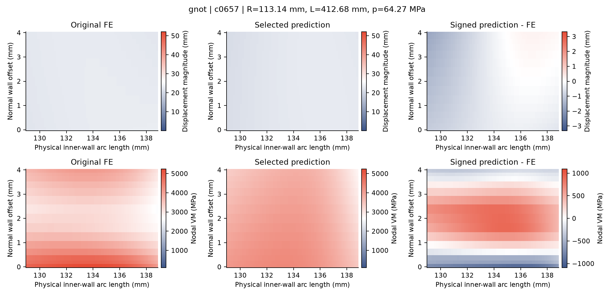

800 train / 100 validation / 100 test. 6000 actual Adam updates (20 equally weighted train cases per update, 150 train passes). Checkpoint 6000 selected only by validation.
| Method | U test mean / worst (%) | VM test mean / worst (%) |
|---|---|---|
| gnot | 2.5551 / 5.0302 | 8.7958 / 11.5641 |
Negative predicted VM cases: 6; raw predictions preserved. Budget completion is not an accuracy pass. These are research results for the specified geometry family and linear FE model; production eligibility remains false.
All 100 test original fields, targets and predictions independently checked on CPU. Train/validation summaries aggregate saved all-case evaluations. The serial worker's exported target has a normalization round trip; metrics here use original FP64 FE labels.




All 100 test case metrics CSV · Independent CPU verification
GNOT: 982170 active parameters; validation selected update 6000. Test U mean/worst 2.5551%/5.0302%; test VM mean/worst 8.7958%/11.5641%. Six test cases have raw negative VM; the minimum is -10.069373 MPa. No clipping was applied. The fixed6000 budget is complete, but the all-case1% criterion was not met.
Both preserved history prefixes (1915 and 4735 complete updates) match exactly. Full GNOT model, Adam states, gradients, CPU/numpy/Python RNG and complete history/LR/validation-only selection were independently restored on CPU; CUDA RNG was checked structurally. All100 native GNOT feature/target arrays equal the original baseline generator. The100 original FE cases were independently rechecked for native label recovery, physical MPC residual and GP energy using saved fields. No FE re-solve or full-node GNOT forward/CUDA update replay was performed.
Curves retain raw recorded values; native fields use nearest shading without numerical smoothing. The local figure is centered on the original FE true peak (inverse[node]//17). This is one fixed-seed, fixed-budget comparison for the stated geometry/linear FE family; it does not establish universal superiority.
All100 full native input equivalence | Native display and true-peak index